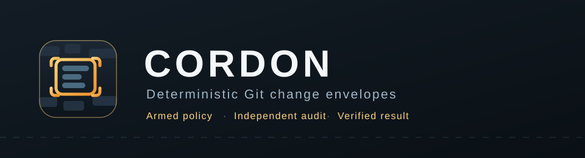

Overview
Deterministic Git change envelopes for coding agents: constrain Git-visible paths and change budgets, reject HEAD movement by default, and let independent verifier commands overrule an agent's success claim.
What it does
- Arms an allow/deny path policy plus file, line, byte, binary and commit budgets.
- Audits the Git-visible result independently of anything the agent reports.
- Refuses to arm when index flags would hide a tracked file from the audit.
- Works with any agent in manual mode, or wraps Claude Code end to end.
Install
shell
git clone https://github.com/BEKO2210/SkillQuarry.git
cd SkillQuarry/cli && ./install.sh
skillquarry info cordon
skillquarry install cordonInstallation verifies the checksum in the sidebar before running the skill's own installer.
Quickstart
shell
cd skills/security/cordon && ./install.sh
cordon run "Fix the parser regression and touch nothing else." \
--allow "src/parser/**" \
--allow "tests/parser/**" \
--verify "python3 -m unittest discover -s tests" \
--max-files 8 \
--max-added-lines 400Version history
| v1.0.0 |
|---|